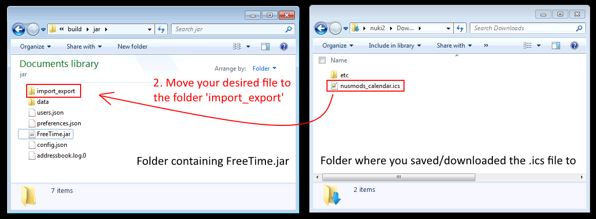
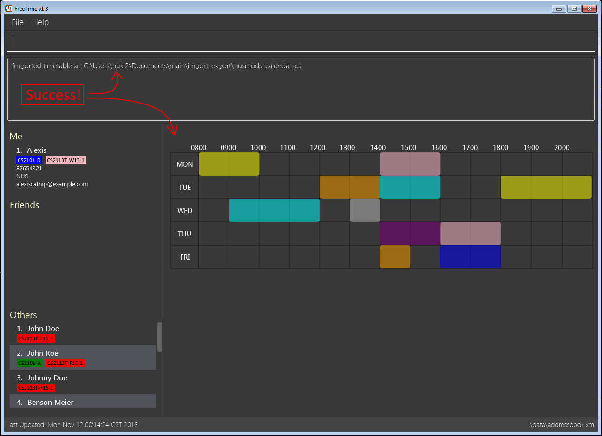
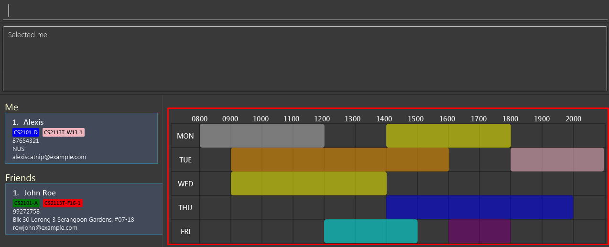

PROJECT: FreeTime
1. Overview
This Project Portfolio outlines my personal contributions to this team project. |
FreeTime is the product of my CS2113T project, done at National University of Singapore. In CS2113T, our team of 4 had to morph an existing application (AddressBook 4) into a different application, all the while ensuring the best coding practices and teamwork.
FreeTime is a Time-Planner application. It is primarily aimed at Students. The most unique feature about FreeTime is that it has the ability to quickly display the times when a group of friends are able to meet up.
Users can import existing timetables into FreeTime, and then proceed to do changes to it, such as adding or removing a timeslot. When they are satisfied with their timetable, they can view the times when they and their friends are mutually free, using the freetime feature.
The main interaction is through a command-line interface (CLI), but the graphical user interface (GUI) is also available. It is written in Java, and has about 10 kLoC.
2. Summary of contributions
This section is a brief summary of my personal contributions to this team project. |
-
Major enhancement: Import and Export Command
-
What it does: Allows the user to import and export timetables that are in the .ics format.
-
Justification (Import): It is a time consuming process for users to manually add their timeslots one-by-one. The import command makes users' lives so much easier, because adding a full timetable is now reduced to a 1-step process.
-
Justification (Export): Having a export feature can allow users to share their personal timetables with their friends.
-
Highlights: I learnt to implement a third-party library into an existing product. It also taught me to be meticulous in my coding, as there can be many unforeseen issues with certain implementations of code. For example, I ran into a timezone bug because I focused too much on implementing logic and left out on testing.
-
Credits: biweekly third-party library (https://github.com/mangstadt/biweekly)
-
-
Minor enhancement: Save user’s timetable across application instances.
-
What it does: Allows the application to save the timetable into the disk automatically. This means that it can remember our users' timetables across restarts.
-
-
Code contributed: [Link to RepoSense]
-
Other contributions:
-
Project management:
-
Contributed to releases
v1.1-v1.4(3 releases) on GitHub
-
-
Documentation:
-
Created documentation for import, export command and save timetable feature.
-
-
Community:
-
Tools:
-
Integrated a third party library (biweekly) to the project (#55)
-
-
3. Contributions to the User Guide
Here are my contributions to the User Guide. I tried to write it so that users could easily understand the commands. I have also included step-by-step instructions for the examples, so that users can get started quickly. |
3.1. Import Timetable : import (im)
Use this command to import a timetable for the current user from a specified file.
Format: import FILE_NAME

Example:
-
import nusmods_calendar
Imports the timetable from.\import_export\nusmods_calendar.ics
(where.represents the folder that the application is in.)-
Download your file from NUDMODS website:
 Figure 2. Download your file from NUDMODS website.
Figure 2. Download your file from NUDMODS website. -
Copy your desired .ics file to the
import_exportfolder:Figure 3. Copy your file to the correct folder. -
Go back to FreeTime, and type in the command
import nusmods_calendar: Figure 4. Type this, then press enter!
Figure 4. Type this, then press enter! -
If the import was successful, FreeTime should look similar to this :
Figure 5. Import Success! :)
-
3.2. Export Timetable : export (ex)
Use this command to export the currently-displayed timetable as an .ics file.
Format: export FILE_NAME
Example:
-
export my_timetable
Exports the displayed timetable to.\import_export\my_timetable.ics
(where.represents the folder that the application is in.)-
Ensure that the timetable you want to export is being shown:
-
type
select meto display your own timetable. -
type
select INDEXto display one of your friend’s timetable.Figure 7. Select the desired timetable.
-
-
Type the command
export my_timetable: Figure 8. Type the command.
Figure 8. Type the command. -
If the export was successful, Your timetable should be waiting for you in the folder :
 Figure 9. Exported file is in the import_export folder
Figure 9. Exported file is in the import_export folder
-
4. Contributions to the Developer Guide
Here are my contributions to the Developer Guide. I tried to write it to be as informative as possible for Developers who are going to take over my code. They showcase my ability to write technical documentation targeting developers. |
4.1. Import and Export timetable feature
The import and export timetable feature allows users to import and export their timetables from and to external applications as .ics files.
The currently supported applications are:
Import:
-
NUSMODS [https://nusmods.com]
Export:
-
FreeTime (you can export a user’s timetable and then import it back in)
-
Google Calendar (Preliminary support, untested: TimeSlots show up as individual events for 1 week.)
4.1.1. Current implementation
The import and export feature consists of two parts:
-
The frontend, which parses user input, and informs the user of success or failure.
-
The backend, which handles the reading and writing of .ics files, and the conversion between the .ics format and the TimeTable object.
Frontend implementation
Similar to the other commands; see Events-Driven nature of the design.
Backend implementation - IcsUtil Class
The IcsUtil class implements two public methods for handling .ics files:
-
IcsUtil#readTimeTableFromFile()- to read aTimeTablefrom an .ics file; accepts thefilePathof the .ics file as parameter -
IcsUtil#saveTimeTableToFile()- to write aTimeTableto disk; accepts theTimeTableandfilePathof the .ics file as parameter
Backend implementation - Import
The general implementation are as follows:
-
Biweekly(external library) is used to obtain anICalendarobject, by reading the import file -
The
ICalendaris converted toTimeTableby IcsUtil. -
Using this
TimeTable, we can update the model.
The following sequence diagram shows how the TimeTable is imported:

Backend implementation - Export
The general implementation are as follows:
-
The currently displayed
TimeTableis obtained from model. -
the
TimeTableis converted into anICalendarby IcsUtil. -
The
ICalendaris written to the file usingBiweekly(external library).
The following sequence diagram shows how the TimeTable is exported:
export Command4.1.2. Design Considerations
Aspect: Which Classes (and which system(s)) should parse the ics file format?
-
Alternative 1 (current choice): All code related to parsing .ics timetable files are inside 'IcsUtil' class. When executing ImportCommand/ExportCommand, it directly calls a method in IcsUtil.
-
Pros:
-
All methods that have to do with .ics parsing are in one class. Easier to implement and manage, given that there are only a few methods for now.
-
Less dependencies. (directly call IcsUtil to read/write .ics files; compared to having to call IcsStorage which then calls IcsUtil).
-
-
Cons:
-
Single responsibility principle is broken. Also, difficult to manage if the class expands and has more methods.
-
-
-
Alternative 2 (Go through the
Storagesubsystem): Follow the existing IO implementation of the other files:addressbook.xmlandpreferences.json; create an IcsTimeTableStorage class to access the ics file in hard disk.-
Pros:
-
Similar implementation to existing: Classes that have to do with IO are accessed using the Storage Interface.
-
-
Cons:
-
Increased dependency: LogicManager will then have increased dependency on Storage.
-
More difficult to implement: Storage subsystem needs to be created on starting the app, whereas the import and export is ad-hoc.
-
-
5. PROJECT: <some other project>
{Optionally, you may include other projects in your portfolio.}